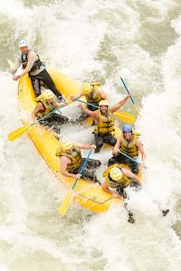

At Swift Expeditions, we believe every journey should be exciting, safe, and memorable. Our team is passionate about adventure and dedicated to creating unforgettable rafting experiences for individuals, families, and groups. Whether you are an experienced adventurer or trying rafting for the first time, we are ready to make your expedition one to remember.